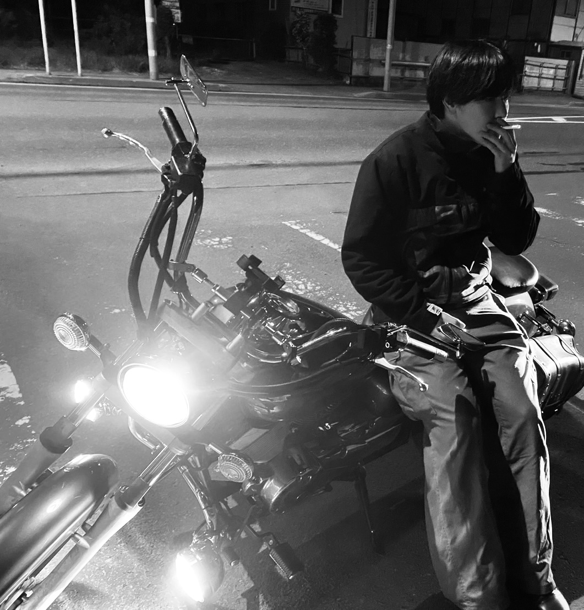

REN'S PORTFOLIO
ABOUT
ヤスエ レン
2002年生まれ 22歳の大学４年生 趣味として写真撮影をはじめ
現在活動の幅を広げようと奮闘中
札幌マチヅクリ大学にて創作活動の楽しさを知り
将来的には、自分の個性の出せる仕事をしたいと考えている
来年からは広告印刷系の会社の内定も決まっている
Ren Yasue
Born in 2002, 22-year-old fourth-year university student. Started taking photos as a hobby
Currently working hard to broaden the scope of his activities
Discovered the joy of creative activities at Sapporo Machizukuri University
In the future, he hopes to find a job that allows him to express his individuality
Has already received a job offer from an advertising printing company starting next year

WORK